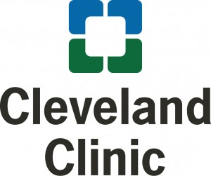

2025 Joint Biostatistics Symposium
 

Welcome to the Annual Joint Biostatistics Symposium 2025
The Joint Biostatistics Symposium, held annually in mid-April, is a pivotal one-day event that serves as a
cornerstone for collaboration and knowledge dissemination among faculty and students from the Ohio State University, Case Western Reserve University, and the Cleveland Clinic. The close physical proximity of the three institutions enables attendees to conveniently commute to the venue within 2 hours, facilitating participation and fostering collaboration. Its primary objective is to facilitate communication and engagement surrounding the latest developments and innovations in the field of biostatistics. By providing a platform for researchers, educators, and students to convene, the symposium fosters an environment conducive to sharing cutting-edge research findings, exploring emerging methodologies, and discussing pertinent challenges and opportunities in the realm of biostatistics. Through collaborative discussions, presentations, and networking opportunities, attendees are empowered to stay abreast of the most recent advances in biostatistical research and to forge connections that drive interdisciplinary collaboration and innovation.
The Joint Biostatistics Symposium is traditionally hosted on a rotating basis by the Ohio State University (Statistics, Biostatistics, and Biomedical Informatics), the Cleveland Clinic (Quantitative Health Sciences), and Case Western Reserve University (Population and Quantitative Health Sciences). On April 7, 2025, Case Western Reserve University will have the honor of hosting the symposium in the Tinkham Veale Center at Case Western Reserve University, offering a valuable opportunity to uphold our commitments and maintain this vital platform. We warmly invite researchers from all institutions—especially those specializing in statistics, biostatistics, epidemiology, bioinformatics, public health, and related fields—to join us for this exciting meeting. We look forward to your valuable contributions!
Registration
Click here to register for Symposium 2025!
Registration is free! To help us plan accurately for lunch, please register by March 9th to secure your free meal.
If you have any questions, please conatct us (cinema@case.edu)!
Event Details
Date: April 7th, 2025
Time: 10:30 am ~ 04:00 pm
Format: In-person only
Detailed agenda
Theme: Data Science, AI and Biomedical Research
We are thrilled to invite you to our annual Joint Biostatistics Symposium. The 2025 Joint Biostatistics Symposium, themed ‘Integrating Data Science with Biomedical Innovations,’ is set to attract substantial interest from medical faculty, students, and researchers throughout the Cleveland and Columbus area, particularly those involved in cancer research. This year’s focus highlights the growing importance of artificial intelligence in biomedical research, emphasizing how AI-driven approaches can revolutionize the field by enhancing diagnostic accuracy, streamlining treatment decisions, and driving advancements in personalized care.
We look forward to welcoming you!
Keynote Speaker
Our keynote speaker this year is Dr. Jeff Leek, a world-renowned biostatistician in human gene expression using machine learning and data science.

Local Organizing Committee:
- Liangliang Zhang, Xiaofeng Zhu, Ming Wang, Lijun Zhang, Holly Hartman, Jeffery M. Albert, Abdus Sattar, Hao Feng, Pingfu Fu, Yilun Sun, Mireya Diaz-Insua, Thomas E. Love ,Yeunjoo E. Song from Department of Population & Quantitative Health Sciences, Case Western Reserve University.
Symposium Steering Committee:
Liangliang Zhang (Department of Population & Quantitative Health Sciences, Case Western Reserve University)
Xiaofeng Zhu (Department of Population & Quantitative Health Sciences, Case Western Reserve University)
Gerald Beck (Department of Quantitative Health Sciences, The Cleveland Clinic)
Michael Pennell (Department of Biostatistics, The Ohio State University)
Shili Lin (Department of Statistics, The Ohio State University)
Qing Wu (Department of Biomedical Informatics, The Ohio State University)
The named lecture is the Jack H. Berman, MD Lecture Fund. As stated earlier, the purpose of the fund is:
“To support a program of guest lecturers who will discuss the basic science behind disease and its application to patient care.”
Funding Acknowledgments
- Jack H. Berman, MD Lecture Fund
- Case Comprehensive Cancer Center